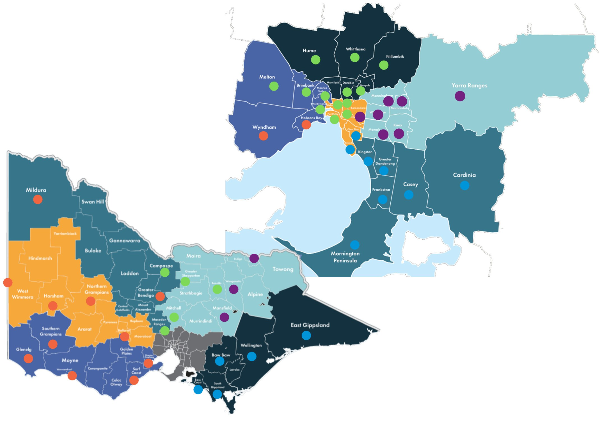

The other day we mentioned on our socials that we'd heard Gymnastics Victoria was looking at new regions. Now it's been officially announced, so let's take a look at the new landscape of Victorian gymnastics.
GV has published its 2027 regions, and the headline is simple: the seven regions we've all been competing in (Metro East, Metro North Central, Metro South, Metro West, North East, South East and West) are being replaced by four. For now they're just A, B, C and D. GV says the names are still to be confirmed, but that they won't be directional, so no more "North", "South" and so on.
GV's stated aim for the regions is to support the continued growth of the sport, give every club and participant pathways and opportunities, and deliver services to the gymnastics community more effectively. On why the change is happening, GV points to the way club numbers have shifted over the years, leaving Regional Championships unbalanced in size, with significant growth in Metro East in particular. It also says the size of each competition has been reviewed, and that the change will affect the WAG Regional Championships. One source also told me the change was to make Regional Championships feel more "prestigious".
THE MAP

Roughly speaking, Region A takes in Melbourne's east and the north-east of the state, Region B runs from the inner city out through the north and north-west, Region C covers the south-east suburbs, the Mornington Peninsula and Gippsland, and Region D takes the western suburbs, Geelong and the whole west of the state. But there are a few clubs that don't fit neatly into that shorthand, which is probably exactly why GV is steering clear of directional names.
THE WAG CLUBS
Here's GV's list of WAG clubs in each new region. Where a club has results on the site, its name links through to its club page.
Region A13
Region B14
- Balance
- EKGA
- Fisherman's Bend
- Gymnastics Unlimited
- Jets Performance Centre (Diamond Creek)
- Jets Performance Centre (Gisborne)
- Jets Performance Centre (Shepparton)
- Macleod YMCA
- Melbourne City
- Melton
- Niddrie
- PIT
- Pulse
- Total Movement & Performance Centre
Region C15
WHO'S MOVING WHERE
None of the old seven regions survives intact. A few of the bigger shifts stand out:
Metro West splits down the middle. EKGA, Gymnastics Unlimited, Melton and Niddrie go to Region B, while Athleta, LFK, Werribee, Wyndham and Geelong YMCA head to Region D, joining the old West region clubs like Ballarat, Eureka, Mildura and Strive.
Metro South goes three ways. Most of it, including Cheltenham Youth Club, Chamford, MYC, Dolphin and Diamond, forms the core of Region C. But Waverley moves to Region A alongside the eastern clubs, and Melbourne City moves to Region B with the inner-north and western suburbs.
Metro East loses MAGA and Casey. Aerodynamix, Eastern, Eclipse, Knox, MLC and the rest of the east stay together in Region A, but MAGA and Casey move to Region C.
The country regions merge with the city. South East (East Gippsland, Leongatha and Maffra) joins Region C, and North East splits, with Flyaway and Moyhu going to Region A and Jets' Shepparton venue going to Region B. All three Jets venues on GV's list, Diamond Creek, Gisborne and Shepparton, sit in Region B, after competing across three different regions in 2026.
BTYC also makes the jump from Metro North Central to Region A.
A MORE EVEN SPLIT
To get a feel for how big each new region will be, I took everyone who competed at the 2026 WAG Regional Championships and re-sorted them into the new regions, based on the club they competed for. Individual counts are Level 5 to 7 gymnasts (Levels 3 and 4 compete as teams, so they're counted as team entries instead). Regionals only covered Levels 3 to 7, so Level 8 and above aren't part of these numbers.
| 2026 Region | L5-7 Gymnasts | L3-4 Teams |
|---|---|---|
| Metro East | 190 | 31 |
| Metro West | 173 | 39 |
| Metro South | 153 | 33 |
| West | 101 | 24 |
| Metro North Central | 90 | 14 |
| North East | 38 | 7 |
| South East | 30 | 8 |
| 2027 Region | L5-7 Gymnasts | L3-4 Teams |
|---|---|---|
| Region A | 216 | 34 |
| Region B | 200 | 39 |
| Region C | 198 | 43 |
| Region D | 161 | 40 |
Under the old seven, Metro East had 190 Level 5 to 7 gymnasts at Regionals and South East had 30, a region more than six times the size of another, all competing for the same kinds of region-based spots. The Level 3 and 4 teams tell the same story, ranging from 7 in North East to 39 in Metro West. Under the new four, the biggest region is only about a third bigger than the smallest, and the team entries sit between 34 and 43.
So where is everyone actually going? The tables below break it down. Read across a row to see where each old region's gymnasts and teams end up, and down a column to see what each new region is made of.
Level 5-7 Gymnasts at 2026 Regionals
| 2026 Region | A | B | C | D | 2026 Total |
|---|---|---|---|---|---|
| Metro East | 135 | - | 55 | - | 190 |
| Metro West | - | 91 | - | 82 | 173 |
| Metro South | 18 | 22 | 113 | - | 153 |
| West | - | 22 | - | 79 | 101 |
| Metro North Central | 33 | 57 | - | - | 90 |
| North East | 30 | 8 | - | - | 38 |
| South East | - | - | 30 | - | 30 |
| 2027 Total | 216 | 200 | 198 | 161 | 775 |
Level 3-4 Teams at 2026 Regionals
| 2026 Region | A | B | C | D | 2026 Total |
|---|---|---|---|---|---|
| Metro East | 19 | - | 12 | - | 31 |
| Metro West | - | 21 | - | 18 | 39 |
| Metro South | 4 | 6 | 23 | - | 33 |
| West | - | 2 | - | 22 | 24 |
| Metro North Central | 4 | 10 | - | - | 14 |
| North East | 7 | - | - | - | 7 |
| South East | - | - | 8 | - | 8 |
| 2027 Total | 34 | 39 | 43 | 40 | 156 |
A couple of caveats. These are this year's numbers, and club sizes will shift by 2027. Our results data records Jets as a single club, so I've counted all of its gymnasts in Region B, since every Jets venue on GV's list sits there. That includes the Jets gymnasts who competed at the 2026 West Regionals, a region that covered both Jets Gisborne and Jets Bendigo, and Jets Bendigo isn't on GV's 2027 list. Some clubs on GV's list, like Trident, Macleod YMCA and Total Movement & Performance Centre, didn't have gymnasts at the 2026 WAG Regionals in our records, so they don't add to the counts.
WHAT WE DON'T KNOW YET
Quite a lot, honestly. Beyond the names, the biggest open questions are about competition:
- Regionals. Assuming there will be four Regional Championships in 2027, one per region, each one would be considerably bigger than most of this year's, with around 160 to 220 Level 5 to 7 gymnasts plus 34 to 43 Level 3 and 4 teams, based on the 2026 numbers. That also raises the question of who will be the lucky club to host each one. My personal opinion: GV should pick a "winning club" at each Regionals and give them the option of hosting the next year.
- States qualification. The current qualification rules are built around seven regions. For Levels 3 and 4, places at Victorian Championships are handed out per region, and for Levels 5 to 7, each region's top team and top individuals get a path in. How those numbers get reworked for four regions hasn't been announced.
Once GV publishes the 2027 handbook or competition calendar, we'll take a proper look at what it means for qualification.
ALL CLUBS
GV also published the full list across every club, not just WAG. Here it is, for anyone looking for their MAG, rhythmic, aerobics or other club. Club names are as GV listed them, with a few obvious typos corrected.
Region A23
- Aerodynamix
- Balwyn
- BTYC
- BUGS
- Eastern
- Eclipse
- Flyaway
- Glitz
- Knox
- Mansfield
- MLC
- Moving Monkeys
- Moyhu
- Nunawading
- Omega
- ProActivity
- Pure Aerobics
- Ruyton RG
- Skylark Sports
- Strathcona RG
- Trident
- Waverley
- Yarra Valley
Region B32
- Artemis
- Balance
- Bayside AER
- Birralee
- EKGA
- Fisherman's Bend
- Flip Faktor
- Goulburn Valley
- Gymnastics Unlimited
- Jets Performance Program (Diamond Creek)
- Jets Performance Program (Gisborne)
- Jets Performance Program (Shepparton)
- Kaygees
- Kiroi
- Loreto
- Macleod YMCA
- Melbourne City
- Melbourne Girls College
- Melbourne Gym Sports
- Melbourne Tumbling Academy
- Melton
- Moonee Valley YMCA
- Niddrie
- Peak
- PIT
- Pulse
- Streetnastics
- Sunbury
- Team Adrenalin
- Total Movement & Performance Centre
- Trilogy Gymnastics
- Westside
Region C27
- AspiStars
- Bayside
- Bellbird
- Bentleigh McKinnon
- Brighton Rec
- Casey
- Chamford
- Cheltenham Youth Club
- Diamond
- Dolphin
- East Gippsland
- Edge
- Galaxy
- Grace RG
- Gymnastics Central
- Highett
- Leongatha
- Maffra
- MAGA
- Melbourne RG
- Melbourne Sports Institute
- Mordialloc
- MYC
- Phillip Island
- Sparta Gymnastics
- Spectrum RG
- VV RG Academy
Region D20
- Ararat
- Athleta
- BALC
- Ballarat
- Blue Lake
- Eureka
- Geelong YMCA
- Ballarat (Hamilton)
- Head Over Heels
- LFK
- Mildura
- Natimuk
- Palmers
- Portland
- Rise RG
- Stawell
- Strive
- Warrnambool
- Werribee
- Wyndham
SAME SPORT, NEW NEIGHBOURS
For a lot of clubs, 2027 will mean lining up at Regionals against teams they've only ever met at invitationals or States. If your club has a view on the new regions, or you hear anything about how Regionals and qualification will work, I'd love to hear about it.